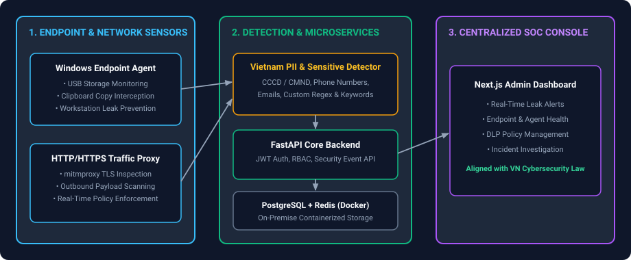

During my research internship at the Research Institute of Posts and Telecommunications (RIPT) in 2025, I worked on designing an internal Data Loss Prevention (DLP) prototype for PTIT's digital transformation platform (PTIT Slink), aligned with Vietnam's Cybersecurity Law and Network Information Security Law.

01. Covering Both Endpoint & Network Exfiltration Channels
Internal data leaks rarely happen through a single channel. To address common exfiltration vectors on internal workstations, we split collection into two complementary sensors:
- Windows Endpoint Agent: Monitors removable USB storage connections and clipboard copy events to detect and restrict unauthorized local data transfers.
- HTTP/HTTPS Inspection: Uses
mitmproxyat the network boundary to inspect outbound web traffic for sensitive payloads leaving the internal perimeter.
02. Vietnam-Specific PII & Sensitive Data Detection
Generic DLP rulesets often miss local data formats. We integrated a custom detection module tailored to Vietnamese datasets—covering National ID (CCCD/CMND), local phone number formats, institutional emails, and domain-specific confidential keywords.
03. Containerized Microservices & Centralized SOC Dashboard
Because university infrastructure requires strict data sovereignty, the entire backend was designed for on-premise Docker deployment using FastAPI (JWT authentication, role-based access control, security event ingestion), PostgreSQL, and Redis, paired with a Next.js admin dashboard for real-time alert triage and policy management.